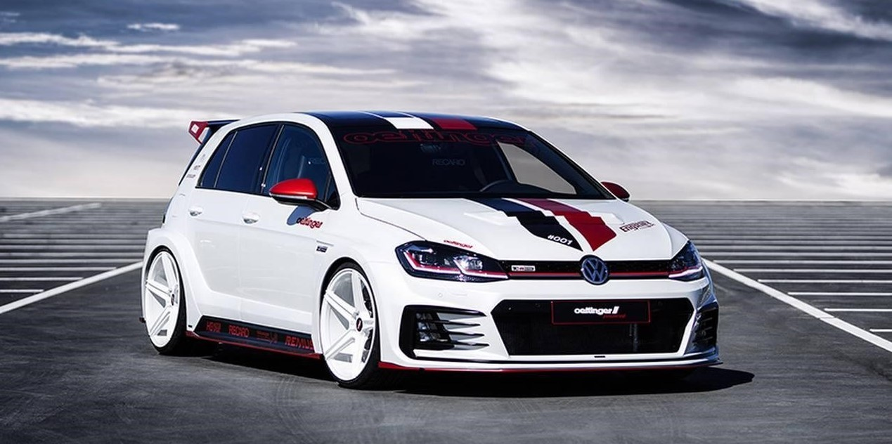
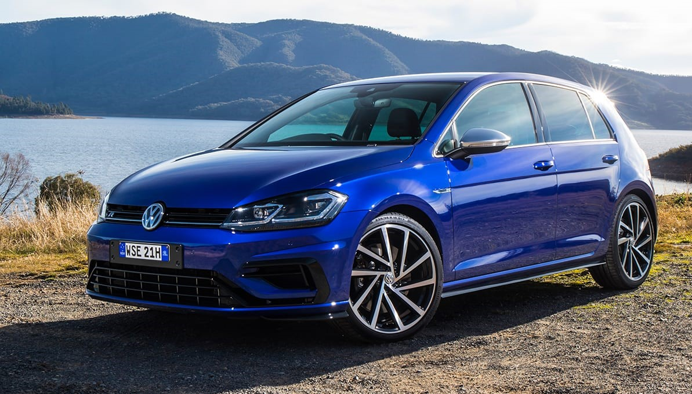
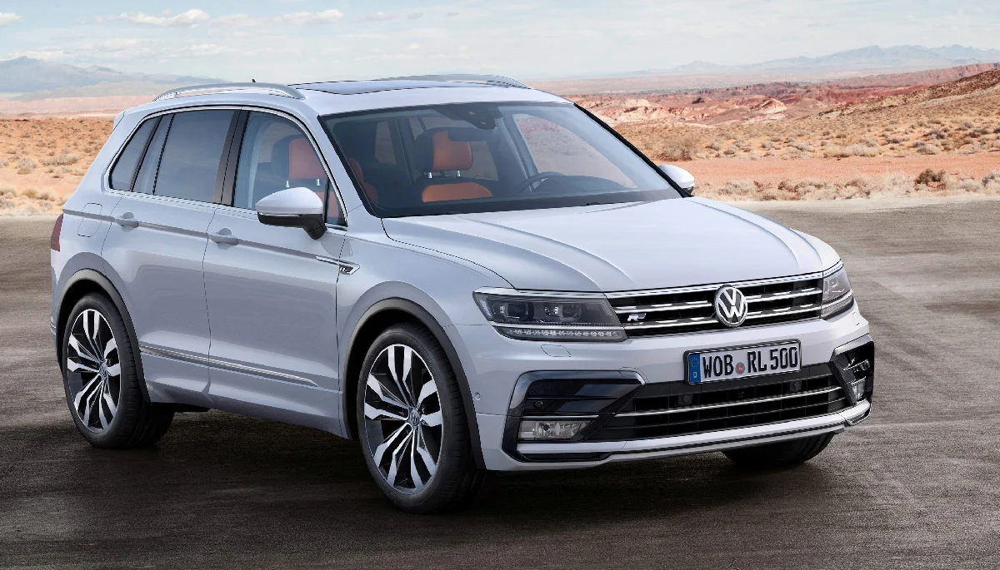
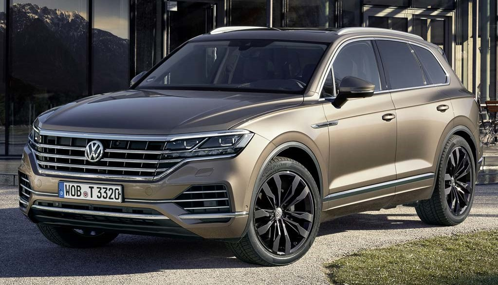

Volkswagen Group
Наши автомобили

VW Golf
от 1 200 000 руб

VW Tiguan
от 1 800 000 руб

VW Touareg
от 2 400 000 руб
Технические характеристики
| VW Golf | дневные ходовые огни 4 стальных диска 6j x 15 центральный замок без функции safelock система abs фронтальные подушки безопасности для водителя и переднего пассажира кондиционер climatic электрические стеклоподъёмники подсветка багажника | от 2 300 000 Р |
| VW Tiguan | многофункциональное рулевое колесо с кожаной отделкой и подогревом подогрев передних сидений легкосплавные колесные диски montana 7j x 17 система контроля дистанции front assist с функцией экстренного торможения city emergency braking трёхзонная система климат-контроля air care climatronic с фильтром пыльцы аудиосистема composition media электромеханический стояночный тормоз с системой autohold подогрев форсунок омывателя | от 4 900 000 Р |
| VW Touareg | светодиодные фары ближнего и дальнего света, дневные ходовые огни кожаный мультируль с обогревом обивка внутренних боковин и центральной части сидений кожей vienna навигационная система discover pro, дисплей 9 датчики парковки спереди и сзади интерфейс app-connect (apple carplay, android auto, mirrorlink) |
от 8 280 000 Р |